{{ p.tag }}
{{ p.title }}
{{ p.description }}
Coltiviamo crisantemi, stelle di Natale, ciclamini, piante da fiore e aromatiche in pieno campo e in serra, sulla costa ionica della Calabria. Produzione propria, piante curate, consigli veri.

Non un catalogo online: piante vere, coltivate nei nostri campi. Vieni a sceglierle, oppure chiamaci per sapere cosa è pronto.
{{ p.description }}
A palla e a margherita, in tutte le tonalità dell'autunno.
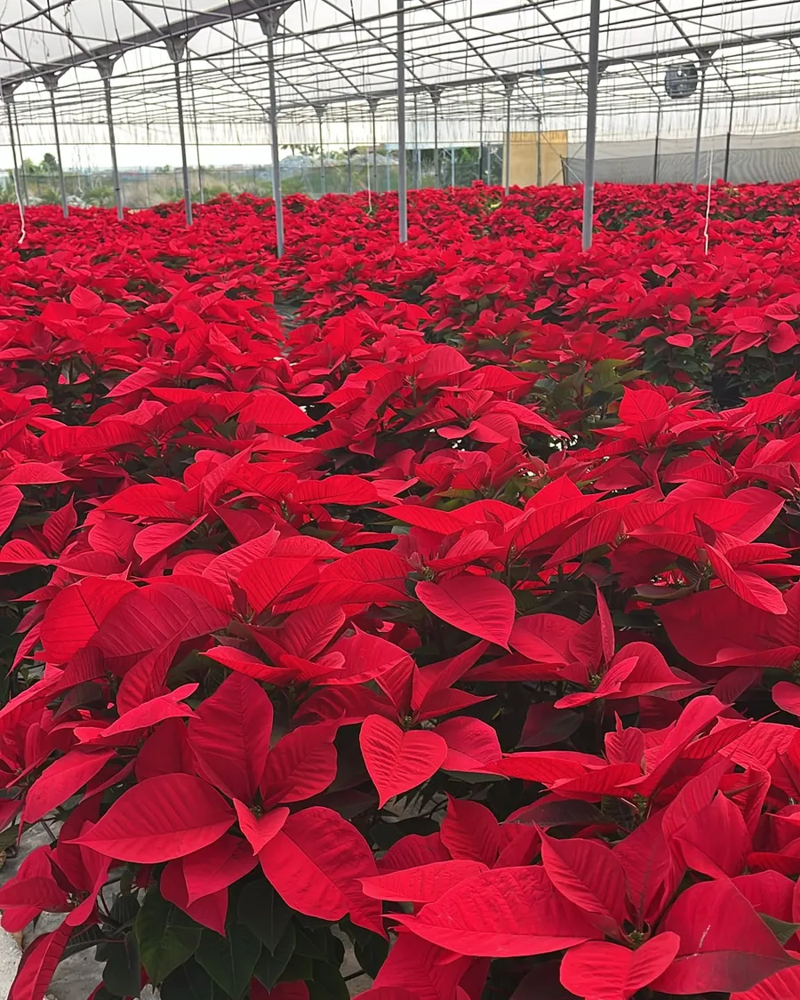
Brattee rosse piene e piante compatte, coltivate in serra.
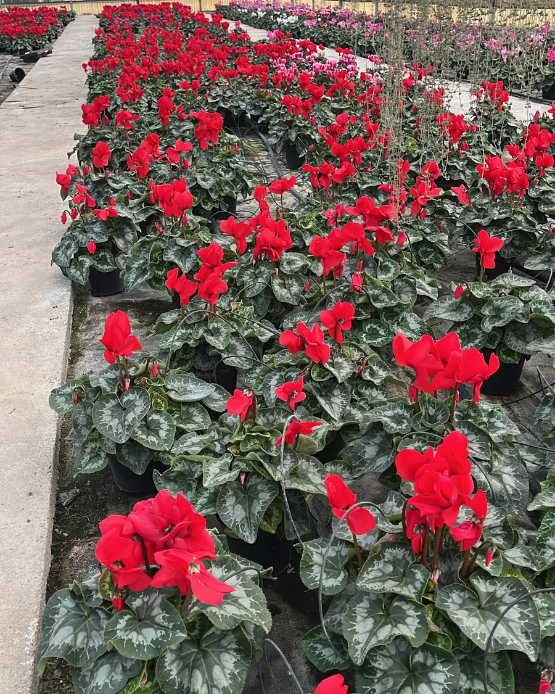
Fioritura lunga, dal bianco al rosso: per casa e per regalo.

Dipladenie, vinca, gerani, ciclamini in stagione e fioriture da balcone.
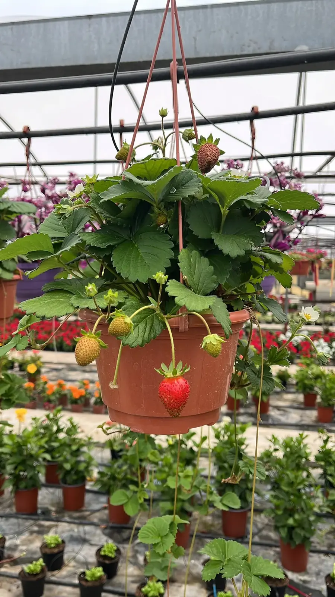
Fragole e piante da frutto in vaso, pronte da trapiantare.
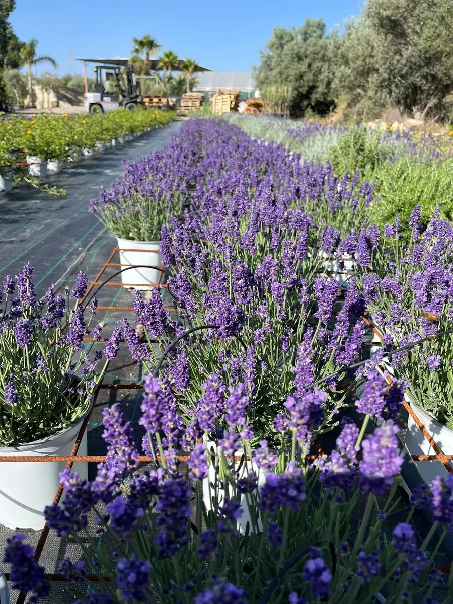
Lavanda, rosmarino e aromatiche da giardino e da vaso.
Da novembre arrivano in vivaio le stelle di Natale e i ciclamini: piante compatte, con brattee rosse piene, fiori che durano e una cura che si vede. Per casa, per un regalo, per allestire la tua attività.
Chiedi disponibilità su WhatsApp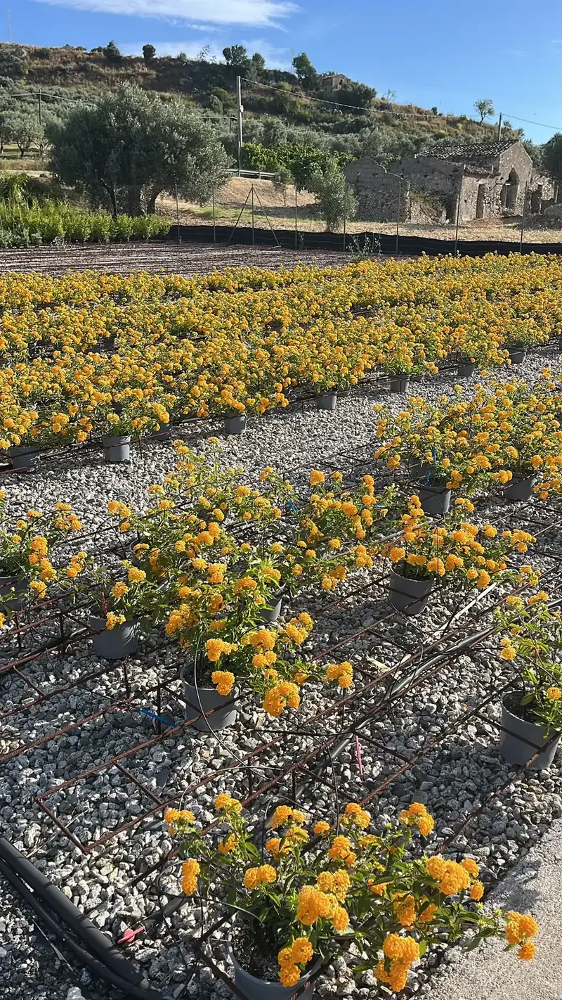
Il vivaio Femia Domenico lavora a Marina di Gioiosa Jonica, sulla costa ionica reggina. Le piante crescono qui, tra pieno campo e serra, seguite una per una fino al momento della vendita.
Oltre alle piante da fiore, ci occupiamo di arredo e cura del giardino e di movimento terra: dalla preparazione del terreno alla pianta messa a dimora.
Due attività che completano il vivaio e risolvono il lavoro più scomodo: preparare il terreno e sistemare il verde.
Fornitura e messa a dimora di piante, realizzazione di aiuole e sistemazione del verde di case, attività e spazi esterni.
Scavi, livellamenti e preparazione dei terreni prima di piantare o sistemare: il lavoro che serve a far durare il giardino.
In vivaio teniamo ulivi e piante di grande formato già in vaso, con tronchi formati e chiome piene. Per un giardino, un terrazzo o uno spazio esterno che deve partire da una pianta importante.
Disponibilità e misure da concordare in vivaio.
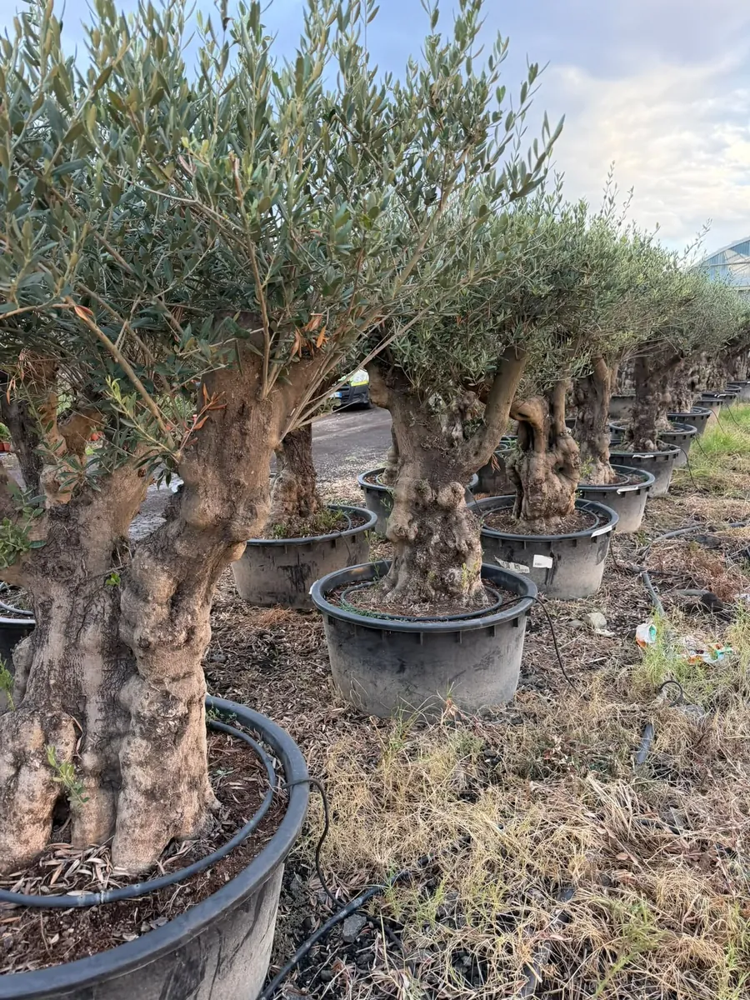
Noleggio a breve termine di piante ornamentali per matrimoni, feste e allestimenti: palme, banani e arbusti fioriti in vaso, da inserire nello spazio dell'evento.
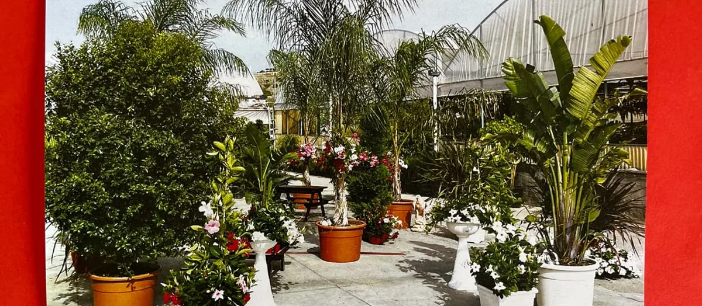
Noleggio a breve termine. Disponibilità e periodo da concordare con il vivaio.
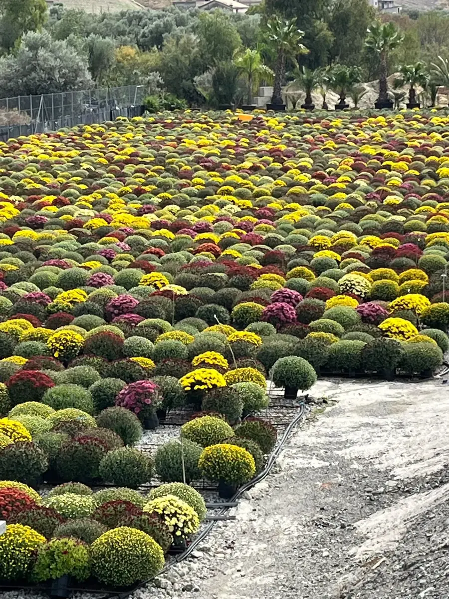
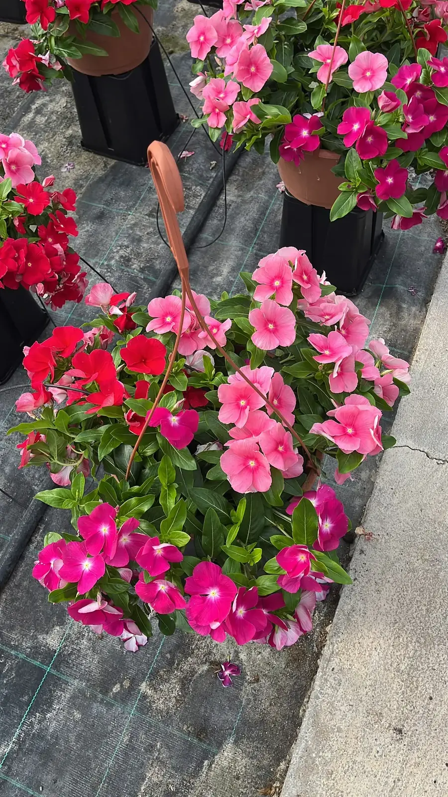
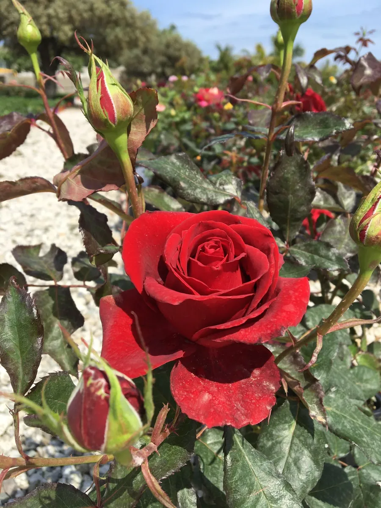
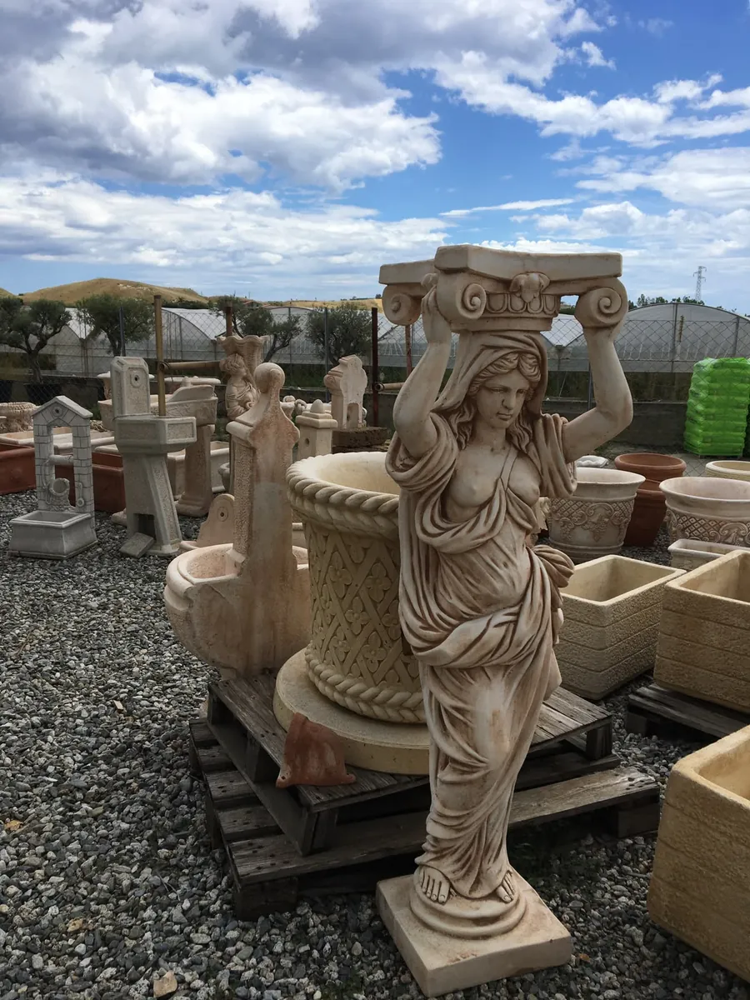
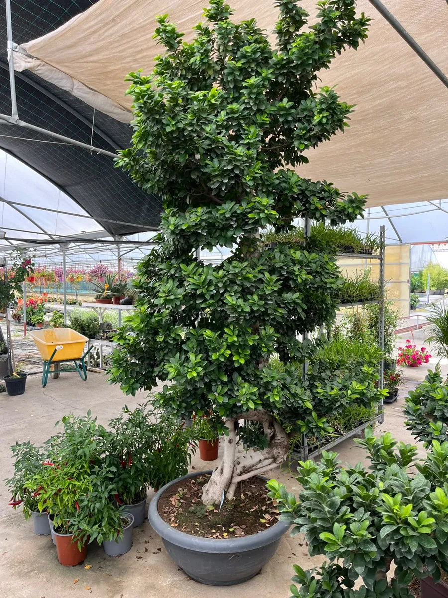
Siamo in contrada, a due passi dal mare. Chiamaci prima di venire: ti diciamo cosa è pronto in vivaio e ti aspettiamo.
Via Ligonia Carella, 2 — Marina di Gioiosa Jonica (RC).
Zona costiera, tra Gioiosa Ionica e Roccella.